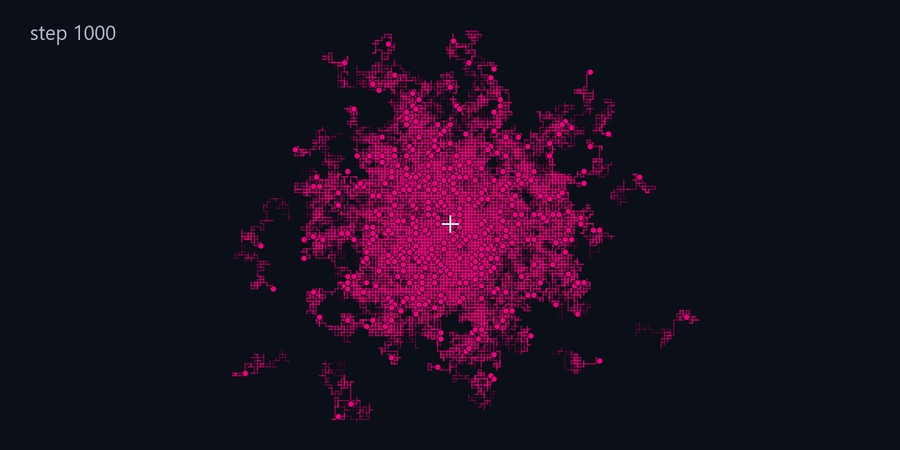
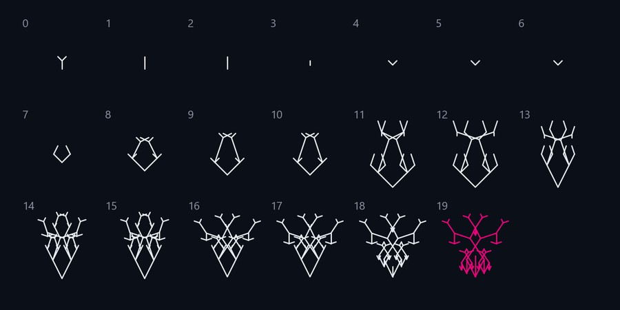
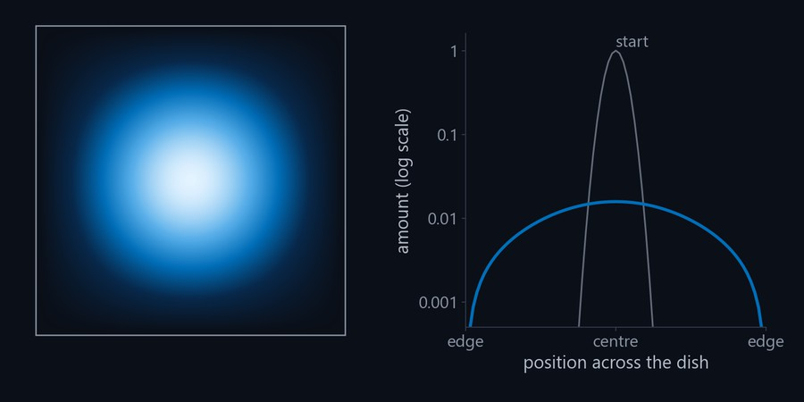
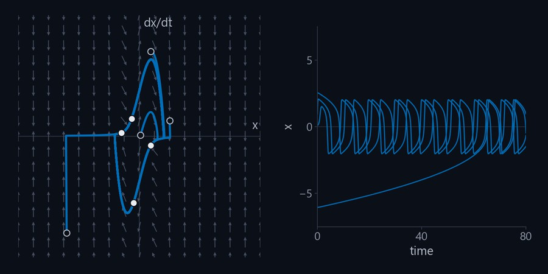
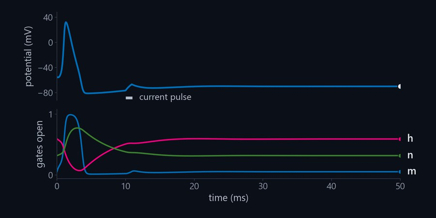
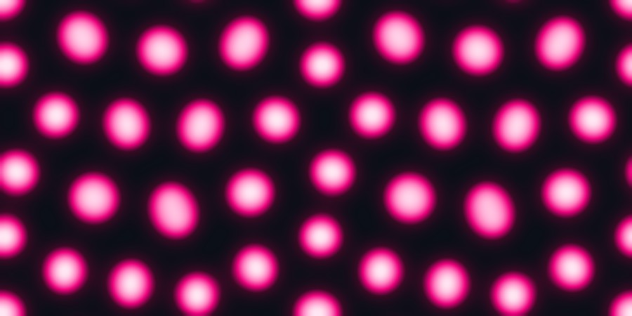
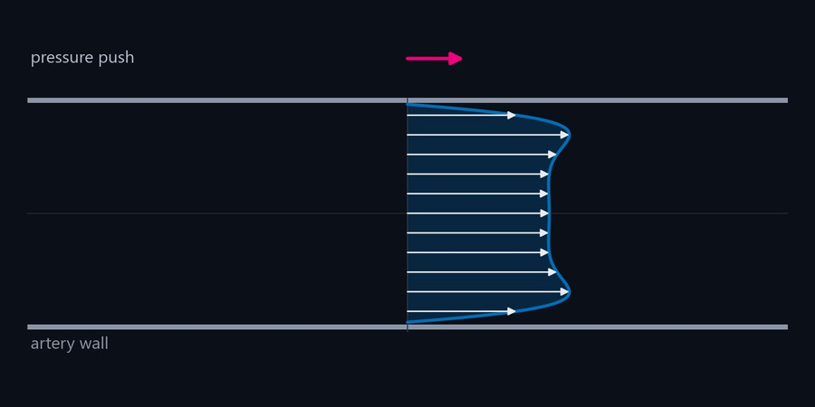
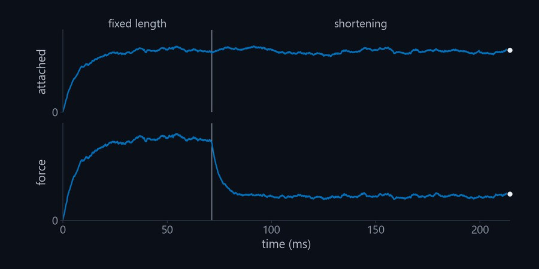
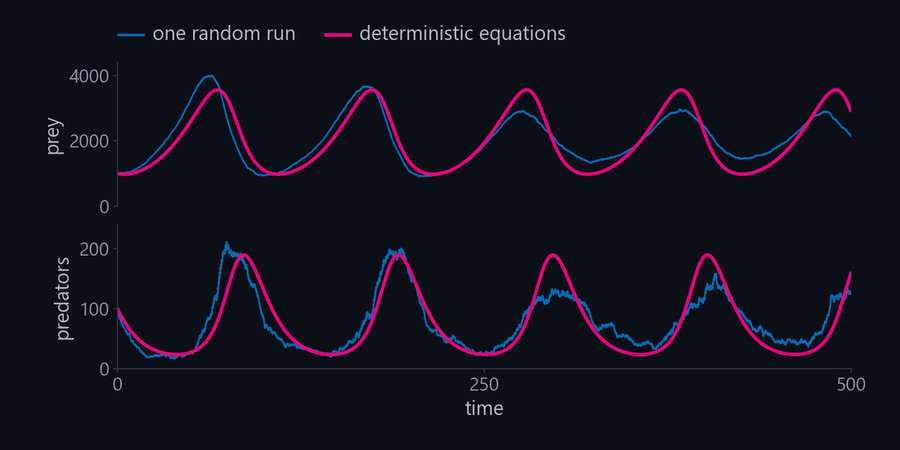
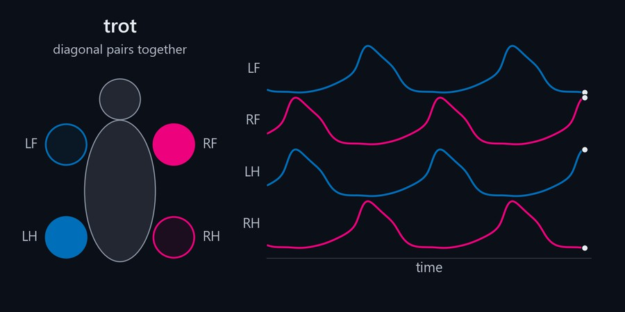

Introduction to Quantitative Biology
Lecture slides, Python lab notebooks, code, and problems from the quantitative biology classes I taught at UNC Chapel Hill. I'm making them free to help students and researchers in mathematical biology and organismal biology, important fields that do not necessarily overlap with national priorities right now and may not be getting the funding and attention they deserve.
The idea
Many of my students were pre-med and pre-vet, so I emphasized examples that are not the standard ones from ecology: how a nerve impulse travels, how crossbridges make a muscle pull, why heart valves matter for disease, how cells build switches and clocks from feedback, and how patterns form from diffusion. The classes start with random walks and Markov chains, then use diffusion, differential equations, phase planes, and stochastic simulation to answer those questions.
Every lab is a Jupyter notebook in Python with the questions I used in class. The code the students were given is written out in full, so you can read it, change it, and run it on a laptop or in Google Colab.
What's inside
- 23 chapters of lecture slides in twelve parts, from mathematical modeling and random walks to diffusion, cell signaling, the nerve impulse, blood flow, muscle, and Gillespie's algorithm, plus a short guide to Python and Jupyter for biologists.
- A Python lab for every chapter, with the course's questions and empty answer cells.
- A small Python package, qbio, with the models the labs share: random walks, Markov chains, genetic algorithms, diffusion, phase planes, Hodgkin–Huxley, FitzHugh–Nagumo, hemodynamics, the crossbridge model of muscle, Gillespie's algorithm, and delay equations. It needs only NumPy, SciPy, and Matplotlib.
- The original MATLAB codes beside their Python versions, with a guide from MATLAB to Python.
- A problem bank from the exams and homework (problems only), and a list of readings.
A few of the chapters
Each chapter has its slides as a PDF and a lab notebook you can open in Colab. These pictures are made with the course's own code.

Random walks
From a drunkard's walk to Brownian motion and how bacteria run and tumble, simulated in one and two dimensions.
SlidesOpen the lab in Colab
Genetic algorithms
Evolution as a way to solve problems: selection, crossover, and mutation, from biomorphs to tuning a bat's echolocation call.
SlidesOpen the lab in Colab
Diffusion
The diffusion equation derived from random walks, and molecules spreading through a lake and across a surface.
SlidesOpen the lab in Colab
Switches, clocks, and phase planes
Signal-response curves, positive and negative feedback, delays, limit cycles, linear stability, and bifurcations in cell regulation.
SlidesOpen the lab in Colab
The nerve impulse
The Hodgkin–Huxley equations in Python, with attribution to Hoppensteadt and Peskin's programs, and the FitzHugh–Nagumo model in the phase plane.
SlidesOpen the lab in Colab
Waves and patterns
A nerve impulse that travels along the nerve, and the spots and stripes that appear when chemicals react and diffuse.
SlidesOpen the lab in Colab
Blood flow and heart valves
Reynolds and Womersley numbers, Poiseuille flow, wall shear stress, disturbed flow at branches, and the design of artificial heart valves.
SlidesOpen the lab in Colab
Muscle
The sliding filament model, length–tension and force–velocity curves, and a Monte Carlo simulation of crossbridges after Hoppensteadt and Peskin.
SlidesOpen the lab in Colab
Chance and small numbers
Random numbers, reaction rate constants, and Gillespie's algorithm for chemical reactions and predators and prey when counts are small.
SlidesOpen the lab in Colab
Viral dynamics, leukemia, and gaits
Three newer models: HIV infection with a delay, blood-cell production with a delay, and coupled oscillators that walk and trot.
SlidesOpen the lab in ColabWhere it came from
I taught this course at UNC Chapel Hill from 2014 to 2020, as BIOL 290 and then as BIOL 226 with its computer lab, for biology majors and for students in mathematics, physics, chemistry, and computer science who wanted biological applications. The labs were in MATLAB. Now they are in Python, with the MATLAB versions kept for anyone who prefers them.
The materials were checked and corrected chapter by chapter, and each chapter was reviewed independently for accuracy, completeness, and layout. I organized and converted them with the help of Claude (Anthropic).
How to use it
- Read a lecture: open the PDF in the chapter's folder under lectures.
- Do a lab: open a notebook in Colab with the links above, or clone the repository and run it in JupyterLab. New to Python? Start with the Python and Jupyter chapter.
- Teach with it: the slides are in LaTeX, so you can change them, and every figure is made by a script in the repository.
- Practice: the problem bank has the course's exam and homework questions, by chapter.
Slides, notebooks, and figures are under CC BY 4.0, and the code is under the BSD 3-Clause license; a few third-party items keep their own terms, listed in THIRD-PARTY.md. Please let me know if you find any issues or have suggestions.